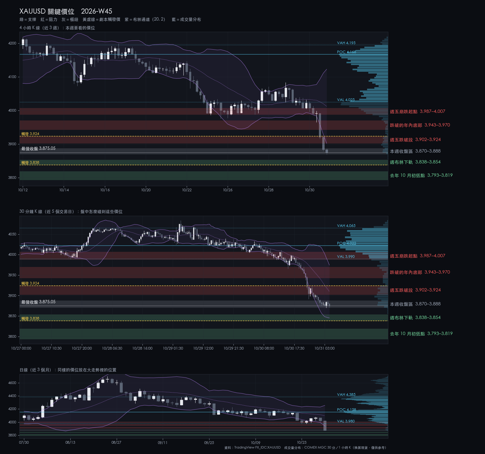
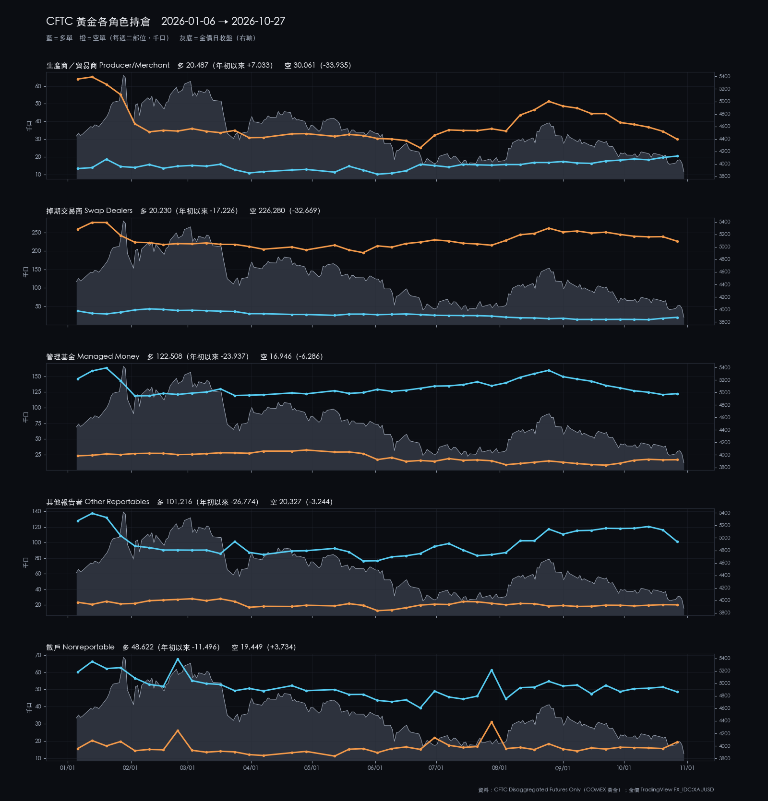
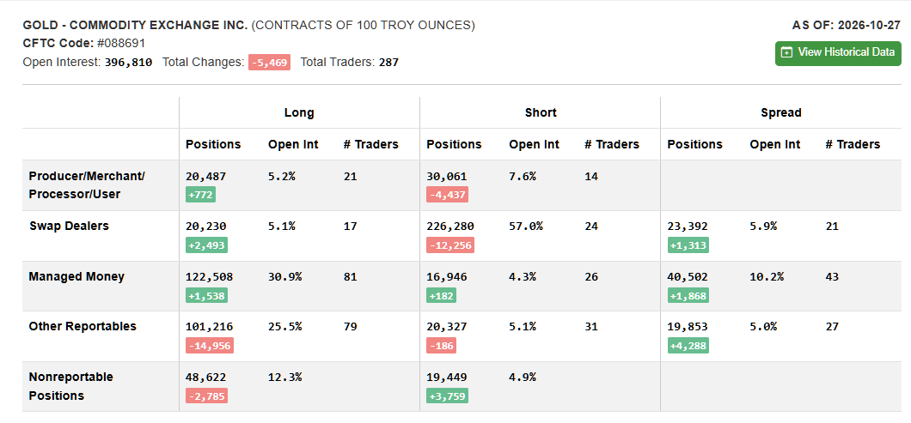

2026-W45 · Sun · 信心 medium 單一來源
XAUUSD 2026-W45 週報
FOMC 前後反彈到 4083 又回落，週五收破年內低點，週收 3875（−3.0%），創今年新低。
本週建議 觀望：3838–3854 等 S2 錘頭；4h 站上 3924 才看反彈
資料截止：2026-10-30T20:30:00+00:00
關鍵價位

| 3,987.27–4,007.07 | 阻力 | 週五崩跌起點 | 反彈到這裡不追多 |
|---|---|---|---|
| 3,942.71–3,969.98 | 阻力 | 跌破的年內底部 | 4h 站回 3970 之上才算收復 |
| 3,902.02–3,923.87 | 阻力 | 週五跌破段 | 4h 收上 3924 轉反彈劇本 |
| 3,869.96–3,887.80 | 樞紐 | 本週收盤區 | 守住先看整理；跌破看週布林下軌 |
| 3,838.22–3,853.60 | 支撐 | 週布林下軌 | S2 主要候選；4h 收破 3838 轉續跌劇本 |
| 3,793.28–3,819.32 | 支撐 | 去年 10 月初低點 | 續跌劇本的目標 |
劇本
| 整理 | 40% | 在 3838–3924 之間整理，等週五 NFP | — |
|---|---|---|---|
| 偏多 | 25% | 4h 站上 3924 後上看 3943–3970 | 3,923.87 |
| 偏空 | 35% | 4h 收破 3838 後下看 3793–3819 | 3,838.22 |
本週看什麼
- 3838–3854 週布林下軌守不守得住
- 3902–3924 週五跌破段能否站上
- 週五 21:30 NFP；週四 22:00 前平倉
S1／S2
| S1 V3.9 | wait | 不追：上軌 3974 在跌破的年內底部之上 |
|---|---|---|
| S2 V3.2 | wait | C 級：只在 3838–3854 出現正式錘頭才考慮 |
事件
| 2026-11-04 08:00 | 美國期中選舉（開票） | 投票日美東 11/3，台北 11/4 早上起陸續開票（時間為估計）。開票到結果明朗前不新進場；結果可能影響美元與油價。 |
|---|---|---|
| 2026-11-03 23:00 | 美國 9 月 JOLTS 職缺 | BLS 排程。中低影響；美國 11/1 結束夏令時間，台北＝美東＋13 小時。 |
| 2026-11-06 21:30 | 美國 10 月非農就業（NFP） | BLS 排程。交易規則：前一晚 11/5（週四）22:00 前全部平倉；公布前後不在場內。 |
| 2026-11-07 01:15 | Fed 副主席（監理）Bowman 座談 | Fed 官方行事曆本週唯一官員談話；週六 04:00 前全部平倉。本週無作證，會議紀要在 11-18。 |
上週回顧
- 週二 4h 站上 4034，FOMC 後到 4083
- 週四跌回 4020 之下，反彈失效
- 週五收破 3943 年內低點，最低 3870.26
| 2026-W41 | 4,136.5 | 4,207.54 | 4,066.58 | 4,194.145 | +1.39% |
|---|---|---|---|---|---|
| 2026-W42 | 4,194.8 | 4,217.19 | 4,073.49 | 4,165.175 | -0.71% |
| 2026-W43 | 4,163.6 | 4,190.38 | 3,975.792 | 3,995.38 | -4.04% |
| 2026-W44 | 3,992.6 | 4,083.41 | 3,870.255 | 3,875.19 | -2.94% |
市場消息
情緒 偏避險：金價、科技股、台股同週下跌，油價續漲
- 週二美國期中選舉，結果約週三台北早上出爐，美元與油價可能波動
- 週五 21:30 非農就業；依規則週四 22:00 前全部平倉
- 金價跌破 3,900 創今年新低；台股外資 10 月賣超近兆
展開看消息整理：上週 6 則、一週變化、近 3 個月、近半年主線
上週消息（2026-10-24～2026-10-30）
| 10-28 | Fed／總經 | FOMC 以 10 比 2 維持 3.75–4.00%；Cook、Hammack 主張升息 1 碼。 | 金價會後一度約 4,034，數小時後回到約 4,075 | Federal Reserve、Investing News |
|---|---|---|---|---|
| 10-29 | Fed／總經 | 9 月 PCE 年增 3.6%、核心 3.1%；第三季 GDP 優於預期。 | 12 月升息預期維持；金價隔日跌破 3,900 | Yahoo Finance、The Currency Analytics |
| 10-29 | 美股／AI | Alphabet 財報不如預期、自由現金流轉負，股價跌約 12%；微軟雲端成長獲買盤。 | Nasdaq −1.4%；Amazon 盤後財報也不如預期 | Yahoo Finance、CNBC |
| 10-30 | 黃金 | 金價跌破 3,900，2026 年新低，距 1 月高點約 −30%；白銀同日跌約 6%。 | 現貨單日約 −3% | FXStreet、Coinpaper |
| 10-30 | 台股／台幣 | 台股跌破半年線；外資 10 月賣超近 9,943 億元，單月紀錄。 | 加權指數 −1,156 點收 45,211.83；台幣收 32.478 | 時報資訊、今周刊 |
| 10-30 | 地緣／油價 | 伊朗稱三艘油輪在荷姆茲觸雷起火，美方否認；胡塞稱攻擊沙烏地油設施。 未確認 | Brent 盤中約 117，10 月漲約 13% | OilPrice.com、FinanceFeeds |
一週變化
| 黃金（COMEX 期貨） | 3,898.90 | -2.72% | 10-30 |
|---|---|---|---|
| S&P 500 | 7,580.07 | -0.57% | 10-30 |
| Nasdaq | 25,437.00 | -2.00% | 10-30 |
| 加權指數 | 45,211.83 | -1.80% | 10-30 |
| Brent 原油 | 117.64 | +0.79% | 10-30 |
| 美 10 年期殖利率 | 4.93 | -6 bp | 10-30 |
| 美元指數 | 101.88 | +0.07% | 10-30 |
| 美元／台幣 | 32.57 | -0.09% | 10-30 |
| VIX | 19.42 | -0.15% | 10-30 |
資料：Yahoo Finance 日收盤（yfinance）
近 3 個月
| 10-01 | Fed／總經 | 美 10 年期殖利率盤中 5.34%，2002 年來最高；第三季升幅為本世紀最大。 |
|---|---|---|
| 10-06 | 美股／AI | Nasdaq 收 27,599.89 創收盤新高。 |
| 10-06 | 台股／台幣 | 加權指數盤中 49,968.92 創新高後回落，投信賣超 158 億、史上第四大。 |
| 10-08 | 地緣／油價 | 荷姆茲油輪遇襲創紀錄，9/28–10/4 一週十艘，通行量腰斬。 |
| 10-14 | Fed／總經 | 9 月 CPI 年增 3.7%（8 月 3.4%），升息擔憂再起。 |
| 10-22 | 美股／AI | 一批 AI 財報再掀支出疑慮，晶片股領跌；Meta 現金流轉負。 |
| 10-22 | 黃金 | 美債殖利率下跌，金價仍單日跌逾 2%；分析認為是科技股大跌時的保證金賣壓。 |
| 10-23 | 地緣／油價 | 沙烏地遭攻擊、中東供應風險升高，Brent 一度約 114，5 月以來最高。 |
近半年主線
| 伊朗衝突與油價 | 2026-02-28 | 荷姆茲觸雷與胡塞攻擊沙烏地的說法未獲證實，Brent 10 月漲約 13%、盤中約 117；11/3 期中選舉。 |
|---|---|---|
| Fed 重回升息與高殖利率 | 2026-06-17 | 10/28 維持利率，兩票主張升息；9 月 PCE 年增 3.6%，市場仍押 12 月升息。 |
| AI 支出與回收疑慮 | 2026-06-05 | Alphabet 自由現金流轉負、股價跌約 12%，Amazon 也不如預期；Nasdaq 週跌 2%。 |
| 黃金從 1 月高點回落 | 2026-01-29 | 跌破 3,900 創年內新低，距 1 月高點約 −30%；市場歸因升息預期與強勁數據。 |
| 外資賣台股、台幣走貶 | 2026-10-06 | 外資 10 月賣超近 9,943 億元創紀錄，台股跌破半年線；台幣 10 月貶約 2%。 |
消息只是背景，不是進出場依據；「未確認」表示只找到評論或二手來源。
CFTC
大戶淨多連八週下降後首次小幅回升到 10.6 萬；散戶本週減多加空（判斷：看不出大戶轉向）。
持倉反映的是建立它的那一週，不能預測下一週；看研究結論 →

CFTC 原始截圖（2026-10-27）

展開看細節：價位依據、劇本完整條件、市場摘要、證據限制
市場摘要
W44 收 3875.19，週開 3992.6，對 W43 週收 −3.01%，收在週區間 2.3% 處、創 2026 年新低。週二 4h 站上 4034.11，FOMC 聲明後到週高 4083.41；週四跌回 4020.30 之下；週五 4h 收破年內低點 3942.71，最低 3870.26。價格在 4h 與 1d 的 EMA50／EMA200 之下，各週期 RSI 都低於 30，停在週布林下軌 3853.60 上方 21.59 點。DXY 週收 101.963（+0.21%），美元不是主要推手（判斷）。
價位依據
| 週五崩跌起點 | 3987.27–4007.07 | 實際成交價：週五 10:00 那根 4h 低 3987.27、14:00 那根收 3991.78、06:00 那根收 4007.02、週四 22:00 那根收 4007.07。 帶寬 19.80 點，約 0.57 根 4h ATR（34.74）。週五 06:00、10:00、14:00 三根 4h 的收盤都在帶內或帶旁（4007.02、3991.37、3991.78）；14:00 那根收盤 3991.78 是崩跌前最後一個收盤（以 ATR 衡量帶寬是執行者選定的描述方式，未經核准，下同）。 |
|---|---|---|
| 跌破的年內底部 | 3942.71–3969.98 | 實際成交價：06-30 日低 3942.71（原年內最低）、6–7 月最低 4h 收盤 3969.35、週五 14:00 那根 4h 低 3965.08。計算值：1d 布林下軌 3943.53（20 根日收盤平均 4099.20 減兩倍標準差）；上緣 3969.98 是 W43 報告的 4h 布林下軌計算值（已過期，當時 4h 中軌 4074.17 減兩倍標準差），沿用以保持帶的連續；本週相近的成交價是 6–7 月最低 4h 收盤 3969.35。 帶寬 27.27 點，約 0.78 根 4h ATR。6–7 月日低跌進 3975 以下的有 6 天，依連續日合併為四次（06-24／25、06-30、07-01、07-16／17；合併方式為執行者選定，未經核准），每次都守住，本週五被跌破（判斷：跌破的支撐常變成反彈的壓力）；1d 下軌 3943.53 與下緣只差 0.82 點。 |
| 週五跌破段 | 3902.02–3923.87 | 實際成交價：週五 22:00 那根 4h 高 3923.87、18:00 那根收 3920.60、2025-10-29 日低 3915.17、10-30 日低 3915.62。計算值：4h 布林下軌 3902.02（4h 中軌 4012.39 減兩倍標準差）；snapshot 的 4h 看跌缺口 3887.80–3915.41 在帶內與下方。 帶寬 21.85 點，約 0.63 根 4h ATR。這是週五跌破年內低點後的第一段，上緣是跌破後的反彈高點；2025 年 10 月底兩個日低也在帶內。 |
| 本週收盤區 | 3869.96–3887.80 | 實際成交價：最後一根 4h（10-31 02:00）高 3887.80、低 3869.96、收 3875.05；週低（日線）3870.255。 帶寬 17.84 點，約 0.51 根 4h ATR。週收 3875.19 在帶內；是 2026 年最低成交區，下週一開盤的第一個參考。 |
| 週布林下軌 | 3838.22–3853.60 | 計算值：週布林下軌 3853.60（20 根週收盤平均 4212.36 減兩倍標準差）。實際成交價：2025-10-01 日低 3853.52、2025-10-03 日低 3838.22。 帶寬 15.38 點，約 0.44 根 4h ATR。週線通道下緣與 2025 年 10 月初兩個日低重疊（與 3853.52 只差 0.08 點）；距週收 21.59–36.97 點，約 0.6–1.1 根 4h ATR。 |
| 去年 10 月初低點 | 3793.28–3819.32 | 實際成交價：2025-09-30 日低 3793.28、2025-10-02 日低 3819.32。 帶寬 26.04 點，約 0.75 根 4h ATR，比其他帶寬，因為兩個日低相隔兩天、中間沒有更好的單一價位。距週收 55.87–81.91 點，約 0.8–1.1 根日 ATR（71.69）。 |
劇本完整條件
| 整理 | 40% | 價格在週布林下軌帶 3838.22–3853.60 與週五跌破段 3902.02–3923.87 之間往復，沒有 4h 收盤站上 3923.87，也沒有 4h 收盤跌破 3838.22 後延續。 | 4h 收盤站上 3923.87，或 4h 收盤跌破 3838.22 且下一根未收回（「下一根」為執行者選定的確認方式，未經核准）。 | 區間內往復：上看 3902.02–3923.87 的反應，下看 3869.96–3887.80 與 3838.22–3853.60。 |
|---|---|---|---|---|
| 偏多 | 25% | 4h 收盤站上 3923.87（週五跌破段上緣），回踩不破 3902.02（帶下緣）。 | 站上後 4h 收盤跌回 3902.02 之下。 | 第一目標 3942.71–3969.98（跌破的舊年內底部）；其上 3987.27–4007.07（週五崩跌起點）。 |
| 偏空 | 35% | 4h 收盤跌破 3838.22（週布林下軌帶下緣），之後 3 根 4h 內無法收回 3853.60（3 根為執行者選定的觀察窗，未經核准）。 | 跌破後 4h 收盤重新站回 3887.80（本週收盤區上緣）之上。 | 第一目標 3793.28–3819.32（2025-09-30、10-02 日低）；其下本報告未列價位。 |
轉折條件
4h 收盤站上 3923.87，或 4h 收盤跌破 3838.22 且下一根未收回——任一發生即脫離整理劇本，屆時以 live 結構重新評估。
S1／S2 完整條件
| S1 V3.9 | 條件式，且要求 live 正式 V3.9 訊號。30m 布林上軌 3974.41 距最後收盤 99.36 點，落在跌破的舊年內底部 3942.71–3969.98 之上，再上 13–33 點就是週五崩跌起點 3987–4007。條件式預評等級為「—」（不建議）。S1 正在預註冊前測，觸及停損門檻即暫停推薦。 | 固定停損：成交價下方 25 點。 | 固定口數與固定停損（細節見密碼頁）；同時只持一個部位。 |
|---|---|---|---|
| S2 V3.2 | 等待價格回測 3838.22–3853.60 週布林下軌帶，並出現正式 V3.2 錘頭訊號；報告作者建議 4h 收破 3838.22 後不在 3838 與 3819 之間接刀，NFP 前一晚 11/5 22:00 後不新進場。條件式預評等級 C（上週 B 級的年內底部已被跌破）。 | 固定停損：成交價下方 25 點；TP1 2R、TP2 4R。 | 固定口數與固定停損（細節見密碼頁）；同時只持一個部位；S2 每週上限 2 次。 |
CFTC 完整數字
本報告 CFTC 段落的原始判讀依據（AS OF 2026-10-27，週二持倉，不含週三 FOMC 與週五跌破年內低點）。可對照本圖核對：未平倉 396,810（−5,469）；Managed Money 多 122,508（+1,538）、空 16,946（+182）、價差 40,502（+1,868），淨多 105,562，連八週下降後首次回升；Other Reportables 多 101,216（−14,956）；散戶（Nonreportable）淨多 29,173（−6,544）。以上僅作描述，不作方向訊號。Commitments of Traders 由 cftc.gov 免費公布，屬美國公有領域資料；本圖只含部位統計，不含任何帳戶、持倉或身分資訊。
證據限制
- 本期僅一份合格報告（另一 producer 暫停中），為單一來源；方向判斷沒有交叉檢驗。
- 本報告的覆核由同一個模型在無建構記憶的情況下執行，不是獨立檢驗：範圍僅限可比對的契約遵循，不涵蓋判斷。覆核修正 10 項，劇本與價位未變。
- CFTC 部位與各角色年初至今圖僅作背景描述，不作方向訊號；研究總覽中相關的「研究方向」結論強度皆為 weak、未通過家族校正。原圖附於本頁供讀者核對。
- 市場消息摘要以自己的文字寫成，「未確認」表示只找到評論或二手來源；新聞不作為價位、機率或進場條件。
- 價位圖的成交量分布以 COMEX 微型黃金期貨（MGC）成交量換算現貨價位，只作參考；過去研究顯示成交量無法區分 S1／S2 的勝負。
- GVZ、10 年期公債殖利率、通膨預期與波動率指標的 TradingView 資料自 2026-06-18 起未更新，完整即時 Macro 判定為 unknown。
- 來源比較共 10 組：5 組 similar、5 組 review（XAUUSD 30m 端點落差、XAUUSD 4h 與週線數值差、DXY 日線／週線差異）；所有計算價一律採 TradingView 人工匯出。
- 選舉開票時間為依美東投票所關閉時間估計，不是官方時刻；費城聯儲主席行程頁無法讀取。
研究證據，非投資建議。所有 Entry／SL 皆為條件式，實際執行前必須以 live TradingView 重新確認訊號與價格；最終決定屬於帳戶擁有者。